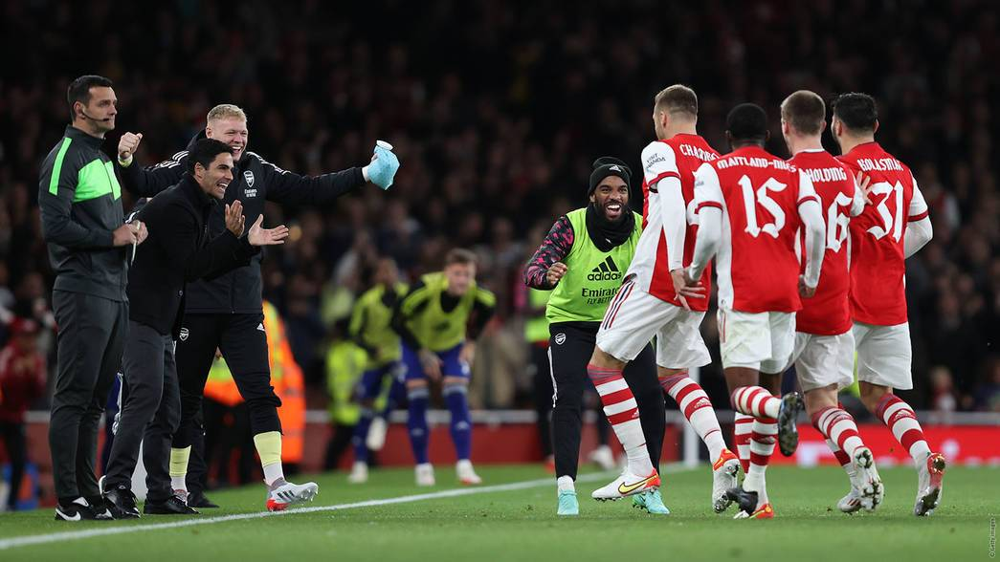
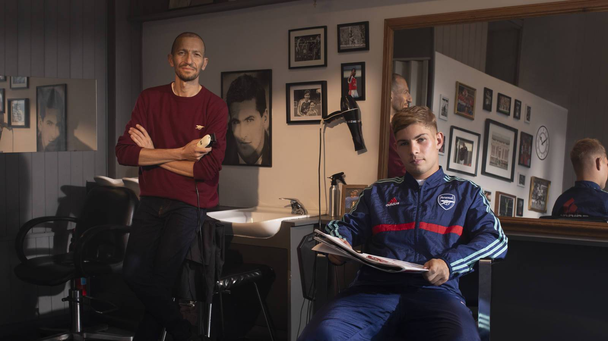
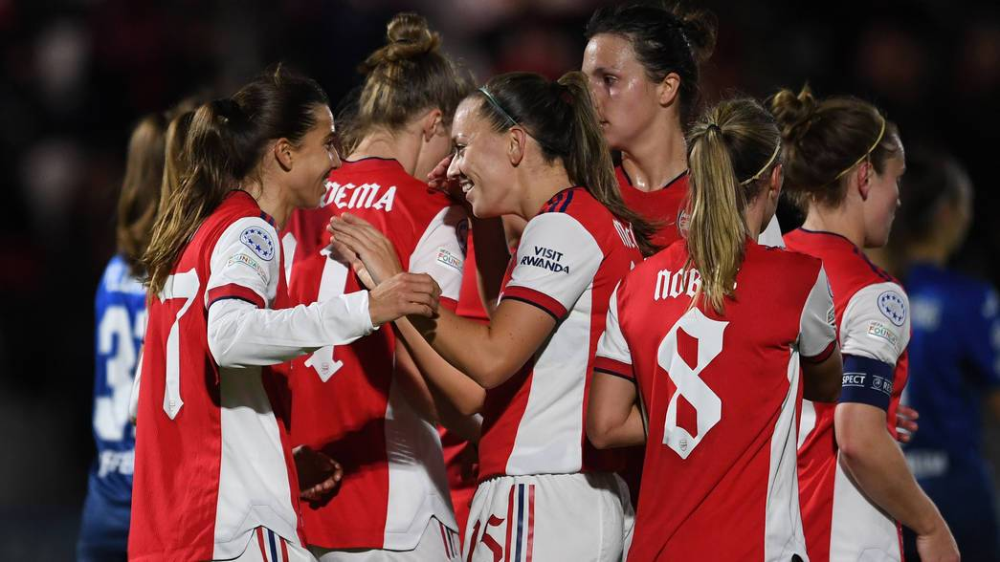

News
Match report: Arsenal 2-0 Leeds
Arsenal booked their place in the quarter-finals of the Carabao Cup after second half goals from Calum Chambers and Eddie Nketiah saw off the challenge of Leeds. Read more...
26th October 2021

It was academy photocall day at London Colney on Monday!
Under-18s and under-23s posed for their official team photos for the 2021/22 season. Read more...
26th October 2021

Arteta on Chambers, Nketiah, White's fitness
Afterwards Arsenal manager faced the media to discuss the match. Read on for a full transcript Read more...
20th October 2021

Arsenal Supporting Supporters: JNF
Inspired by player-business partnerships of yesteryear and kicked off by local pub, The Tollington and Rob Holding, this is the third instalment in a series Read more...
20th October 2021

Heath - It's easy with ‘cerebral’ Miedema
The USA international combined wonderfully with Vivianne Miedema to make it 2-0 on the stroke of half-time, so it’s no surprise that she’s a huge admirer of the ‘GOAT’. Read more...
20th October 2021